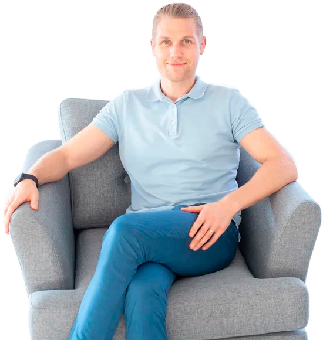

Онлайн-курсПсихосоматика для всех
Знали ли вы, что Психосоматика есть в 80℅ болезней и симптомов? Убрав ее можно переключить свой организм на исцеление, а помочь вам в этом может мой авторский курс.
Кому подойдёт курс?
Этот курс для тех, кто хочет…
Исцелиться
Излечение от болезней, научитесь чувствовать и выражать свои эмоции и слышать себя и своë тело.
Помочь своим близким
С помощью психосоматических техник сможешь помогать себе и своим близким избавиться от недугов.
Освоить новую профессию
На курсе, изучишь основы Новой Германской Медицины и станешь практикующим психосоматологом.
Расширить кругозор
Если ты уже являешься психологом, то сможешь добавить дополнительный перечень услуг для работы с клиентами.
О курсе
В своей практике я удостверился, что психосоматика есть абсолютно во всех болезнях и симптомах, поэтому решил создать свой авторский курс.
После прохождения курса любой человек сможет помочь себе, своим близким, расширить кругозор и даже освоить новую профессию
- 13 видео уроков в формате 4К.
- Вопросы на усвоение материала к каждому уроку.
- Практика с заданиями в 10 уроках.
- Самые удобные справочники для поиска причин симптомов и болезней.
- Итоговое тестирование и ответы на ваши вопросы.
- Выдача сертификата.
Программа
Обо мнеМихаил Луньков
Дипломированный психолог, член ассоциации психологов, специалист по психосоматике. Отец двух детей и любящий муж.
Помогу исцелиться от любых болезней и симптомов, справиться с чувством вины, обиды, тревоги, паническими атаками, пережить утрату близких, так как проработав травмирующую ситуацию, ваше тело в любом случае, перейдёт в Фазу восстановления.
- 1000+Часов практического опыта
- 4.9/5Положительных отзывов и довольных клиентов
- 830+Успешно проведённых консультаций
Бесплатный семинар
Рекомендую вам начать знакомство с психосоматикой с просмотра моего семинара.
На данном семинаре я простым и доступным языком рассказываю, как же получилось, что причиной болезни является не генетика, экология, плохое питание или вирусы, а стресс.
Стоимость услуг
Личная онлайн консультация, терапия
- Сопровождение 7 дней
- Диагностика через биолокацию
8 000 ₽
ЗаписатьсяКурс «Психосоматика для всех»
- 13 видео-уроков
- Практика с заданиями
- Вопросы на усовение материала
- Итоговое тестирование и ответы на ваши вопросы
- Удобные справочники для поиска причин болезней
28 800 ₽
ЗаписатьсяКомплексная работа на «Исцеление»
- Ведение в течении 30 дней.
- Минимум 4 онлайн консультации.
- Диагностика через биолокацию.
- Подбор средств для ускорения исцеления.
- Работа на результат (с гарантией возврата денег).
25 000 ₽
Записаться
Отзывы
Сертификаты и дипломы
{kind=link}
{kind=link}
{kind=link}
{kind=link}
{kind=link}
Психосоматика заболеваний
С помощью справочника вы можете узнать какой конфликт стал причиной болезни
(свои вопросы мне можно написать на почту)
- Аденоиды – конфликт куска (не получил или не смог удержать то, что очень хотел).
- Алкоголизм – фаза программирования.
- Аллергия – конфликт расставания.
- Алопеция (потеря волос) – конфликт расставания.
- Аменорея (отсутствие менструаций, месячных) – не принятие себя как женщины, не принятие брака или желание разорвать связь со всем что происходит в жизни.
- Анемия – сильное самообесценивание на фоне своей семьи.
- Анорексия – Одновременно два конфликта: 1. с матерью (либо заменяющей её роль) 2. территориальный (дома, в школе, на работе).
- Аносмия (потеря обоняния) – страх будущего, не желание чувствовать чей-то запах, ситуация которая дурно пахнет.
- Аппендицит – конфликт копилки (недостаток денег), копилка переполнена новой информацией (когда мы хотим выучить много нового).
- Аритмия – нам раздают приказы которых мы не хотим исполнять.
- Артрит – ФВ конфликта самообесценивания (постоянные рецидивы с обесцениванием себя на фоне - Я этого не могу).
- Астигматизм – конфликт связан с «Люблю и Ненавижу».
- Астма – Конфликт сильного территориального страха или испуга, со страхом потери или расставания.
- Бедро и шейка бедренной кости – Противостояние, не желание уступать, самообесценивание.
- Бессонница – есть конфликт который важнее сна (хроническая депрессия).
- Боль спина:
- Поясница – Переживание за ребёнка, за финансы, за проблемы с сексом.
- Шея – чувство несправедливости в свой адрес.
- Верхняя и средняя часть спины – меня прижали к стене, я должен рассчитывать только на себя.
- Горло (боль в горле) – Конфликт неспособности сказать то что очень хотели.
- Бородавки – самообесценивание у меня получилось хуже чем у других.
- Бронхи, бронхит – Конфликт с угрозой территории, угроза на собственной территорию.
- Бруксизм – Я должен держать рот за зубами.
- Ветрянка – конфликт расстования с матерью.
- Волосы – не сдерживание своих обещаний - в этот момент может появиться перхоть, выпадение волос связаны с конфликтом расставания.
- Выкидыш – Раздор между родителями, страх за ребёнка или страх жизни с ребёнком.
- Геморрой – Не могу сказать нет, не доделывание начатого до конца, включаю заднюю.
- Герпис – конфликт поцелую, неприятного контакта, конфликт расставания.
- Гипотиреоз – время бежит слишком быстро, важно замедлиться перед лицом опасности.
- Глаза – все заболевания с глазами подразумевают «Не видеть» не желание или не возможность смотреть или видеть, не желание чтобы видели нас. Доминирующий глаз связан с самыми близкими (детьми, мама), а вторичный - враги, соперники, глаз защиты.
- Головокружение – защита себя или других чтобы оставаться на месте, нужно замереть.
- Грибок на ногах – сожаление связанное с матерью.
- Губы – трещины - Меня не слушают, зачем вообще говорить.
- Изжога – моя мать меня не могла утешить, подобрать правильные слова.
- Кожа – Дерма - конфликты загрязнения и атаки на целостность тела.
- Дёсны – самообесценивание, страх что-то сказать.
- Диабет – Сопротивление тому что мне отвратительно, что меня бесит. Нужно всегда быть готовым к битве.
- Диарея – неспособность переварить какую-то ситуацию, информацию, нужно быстро избавиться от грязи.
- Жир, лишний вес – защита себя от опасности, мне нужно быть важным, большим. Мне запрещают, запрещали есть сладкое.
- Заикание – Конфликт самообесценивания вместе с запретом говорить. Сожаления о сказанном.
- Запор – Конфликт на территории в контексте «Кто я тут» или «Где моё место». Либо конфликт активного расставания. Я не хочу туда идти или ехать.
- Запястье – самообесценивание, отрицание своих чувств или быть посредником между кем-то.
- Звон в ушах – человек сохраняет память о шуме, шум который нужно услышать чтобы жить дальше, выжить.
- Зубы – самообесценивание и сильная злость на кого-то, не возможность что-то или кого-то укусить, удаление зуба = потеря человека.
- Импотенция – Я не достаточно хорош, я не могу доставить удовольствие, отрицание авторитета мужа, конфликт потери женщины.
- Инфаркт – конфликт потери территории.
- Камни в желчном – страх, что другие на меня будут злиться.
- Киста яичника – конфликт не имения ребёнка или конфликт потери своего ребёнка, домашнего животного.
- Колени – принуждение к чему-либо, самообесценивание я медленный, плохо гнусь и т. д.
- Конъюнктивит – расставание, человек не хочет видеть то, что видит в его жизни или то что его ждёт.
- Косолапость – стресс пережитый в животе у мамы, сильная опасность, нужно всегда быть на готове убегать.
- Кости – сильное самообесценивание. «Я не на что не способен».
- Кость таза – сексуальное самообесценивание, самообесценивание связанное с беременностью, не возможностью иметь детей.
- Крапивница – расставание с чувством сильной злобы.
- Крестец – «Я приношу себя в жертву».
- Кровь из носа – страх возвращаться домой, страх смерти, «Я должен почувствовать что я жив».
- Курение сигарет – не хватка мужского, быть смелее. Не хватка радости в жизни.
- Ларингит – страх сказать, я не решаюсь сказать что-то важное.
- Лёгкие – страх смерти.
- Лимфа – пережитый сильный страх, когда не смог себя защитить, когда было сильно страшно.
- Локоть – недооценивание себя, я кидаю слишком плохо, мой удар слишком слаб и т. д.
- Лопатки – нападение сзади.
- Меланома (родинка) – страх быть атакованным, защита.
- Менструация (боли) – Страх забеременеть, мать не окончила оплакивать своего ребёнка, я не принимаю свою женственность.
- Мигрень, головная боль – Интеллектуальное самообесценивание, Сравнение себя с другими, я не могу придумать хорошую идею, сильная боль - не желание встречаться с реальностью, жить как живу, жить с кем живу, делать то что делаю.
- Миндалины – не способность что-то проглотить, получить или наоборот избавиться.
- Миопия (близорукость) – страх за то что находиться рядом, нельзя что-то пропустить то что находится рядом.
- Молочница – неприятный половой контакт.
- Гиперметропия (дальнозоркость) – нужно быть эффективным на расстоянии, опасение чего-то далёкого, опастность не должна застать меня врасплох, страх будущих событий.
- Нёбо – осуждение себя, чувство вины, что-то поймали, но не можем это проглотить, удержать.
- Недержание кала – сильное отчаяние, чувство брошенности, нужно сильнее метить территорию.
- Недержание мочи (энурез) – мне нужно метить свою территорию, мои границы нарушают (ребёнок также может считать это от мамы).
- Недостаток веса – мне нужно стать невидимым или нет права на существование.
- Ноги – проблемы с венами - тяжесть, гири на ногах которые не дают идти куда хочется.
- Грызть ногти – сдерживание агрессии. Я могу причинить боль другим.
- Отит, уши – неспособность или не желание что-то слышать, услышать.
- Пальцы рук:
- Большой – самообесценивание, вам показали палец вниз.
- Указательный – нас поругали за что-то.
- Средний – самообесценивание связанное с сексуальным удовольствием.
- Безымянный – не желание видеть что-то в браке, союзе.
- Мизинец – палец секретов и лжи.
- Пальцы ног:
- Большой – самообесценивание связанное с мамой.
- Второй – самообесценивание связанное с братьями и сёстрами.
- Третий – Самообесценивание связанное с обменом, контактами (братьями, сестрами, супругами, коллегами).
- Четвертый – Злость к братьям и сёстрам.
- Мизинец – Самообесценивание связанное с территорией которую я разделяю с родственниками.
- Перхоть – конфликт разделения.
- Печень, рак печени – недостаток чего-либо внимания, денег, веры.
- Плечо левое – самообесценивание я плохая мать, отец.
- Плечо правое – Я мог сделать это лучше.
- Копчик – Быть пойманным на чём то, Обесценивание с сексуальнм подтекстом, из-за моей сексуальности меня не принимают люди.
- Крестец – Я жертва, я извращенец. сексуальное самообесценивание.
- Потоотделение – чувствовать себя в ловушке.
- Почки – это конфликт беженца, чувствовать себя не в своей тарелке, конфликт жидкости.
- Камни в почках – борьба за выживание, неспособность пометить территорию.
- Преждевременная эякуляция – нехватка отца, символически заменил матери мужа. Нет право на секс, анонизм это нужно сделать как можно быстрее.
- Прыщи – конфликт загрязнения, услышать что-то плохое или когда дразнят человека.
- Псориаз – двойное расставание, одно и следом другое.
- Пятки – страх осуждения, мне наступают на пятки.
- Рак груди – конфликты связанные с домом и семьёй, что-то произошло в гнезде.
- Рак дермы – конфликт загрязнения и атака на целостность.
- Рак желудка – неспособность переварить кусок, вещь, информацию.
- Язык, рак языка – сдерживать себя в словах, закрыть свой рот.
- Рак яичников – потеря любимого.
- Ринит – не выносимый запах от другого человека, хотим изгнать другого из нашего носа.
- Рука – нет возможности удержать или желание оттолкнуть.
- Сухой кашель – я отвергая вторжение, принуждение на моей территории.
- Таз – Конфликт сексуального подавления, я не способна получить удовольствие.
- Храп – не удержал то что хотел, я хочу позвать своего партнёра, уловить аромат партнёра, я зову на помощь, я хочу чтобы обо мне позаботились.
- Целлюлит – я не могу себя видеть в зеркале, самообесценивание, у меня толстые ноги.
- Цистит – не возможность пометить свою территорию.
- Щитовидная железа – мне нужно быть быстрее, я слишком меленый.
- Гипертиреоз – надо делать быстро, быстро.
- Гипотиреоз – Мне нужно сделать очень много всего, я не смогу!
- Язва – опасность вторжения на территорию.
- Яичники – потеря или смерть близкого человека, животного.
- Ячмень – увидеть что-то грязное, увидеть ошибку в важном документе.
Контакты
Остались вопросы?
Используй форму обратной связи или напиши мне напрямую
lunkov_psy@mail.ruhttps://vk.com/public212079747+7 930 813 92 65